Implementación física del sintetizador de señal electrocardiográfica utilizando exclusivamente circuitos analógicos. Sin microcontroladores. Sin sistemas digitales. 60 BPM de ritmo cardíaco sintetizado con morfología clínicamente correcta.
El sistema se estructuró en cinco bloques funcionales en cascada, verificando el funcionamiento de cada bloque de forma independiente antes de la integración. Esta metodología permitió identificar y resolver problemas severos de hardware de manera sistemática.
Integrador inversor con Vin = −0,66 V genera rampa 0→10 V en 1 s exacto (60 BPM). Reset automático: Schmitt Trigger detecta los 10 V y dispara un MOSFET 2N7000 que descarga el capacitor abruptamente a 0 V.
Banco de comparadores traduce rangos de voltaje en pulsos de activación para cada subonda. P: 3,6–4,4 V. T: 7,2–10 V. Salida en lógica positiva mediante MOSFET inversor.
P y T: Filtros Sallen-Key Bessel-Thompson (Q = 0,55, C₁/C₂ = 1,21) generan domos suaves sin ringing.
QRS: Integradores limitados con Rin = 0,5·Rbias generan rampas triangulares simétricas.
Buffer de aislamiento por canal (Zin→∞) elimina el efecto de carga. Sumador inversor con Rf = Rin = 100 kΩ garantiza ganancia unitaria balanceada. Inversor final corrige polaridad.
Los filtros clásicos (Butterworth, Chebyshev) deformaban las ondas P y T con sobreimpulsos (ringing) en los flancos de subida, distorsionando su morfología característica. La aproximación Bessel-Thompson garantiza un retraso de grupo constante, eliminando completamente el ringing.
La regla de diseño resultante: C₁ debe ser ≈20% mayor que C₂. Esta relación genera los domos de fase lineal perfectos para representar las ondas P y T del ECG clínico.
Para las ondas Q y S se usan integradores limitados que generan rampas triangulares negativas. La simetría de subida/bajada se garantiza con la relación:
La onda R usa la misma configuración precedida por un inversor (G = −1) para polarizar positivamente la rampa y generar el pico alto dominante del ciclo.
El sistema permite alterar la morfología de la señal en tiempo real mediante conmutaciones físicas simples. Cada patología corresponde a una manipulación directa de la red resistiva o a la inserción/eliminación de una etapa.
Un switch suprime el ingreso de la rampa al comparador de la onda P, eliminando su pulso completamente. El trazo resultante no muestra onda P, replicando clínicamente la ausencia de activación auricular coordinada.
Switch → suprime comparador onda P → AP = 0Un potenciómetro ajusta la resistencia inferior del divisor de tensión pre-Buffer del canal R, elevando la amplitud de la onda R a voluntad. Replica el aumento en la amplitud del complejo QRS característico de la hipertrofia.
Potenciómetro → divisor pre-Buffer R → ↑ amplitud onda RUn conmutador inserta un amplificador operacional inversor (G = −1) exclusivamente en la salida de la onda T, invirtiendo su fase. Replica el patrón de onda T invertida característico de la isquemia miocárdica.
Switch → inserta inversor G=−1 → inversión onda TEl proceso de diseño exigió un exhaustivo análisis analítico frente a obstáculos severos de hardware propios del prototipado analógico.
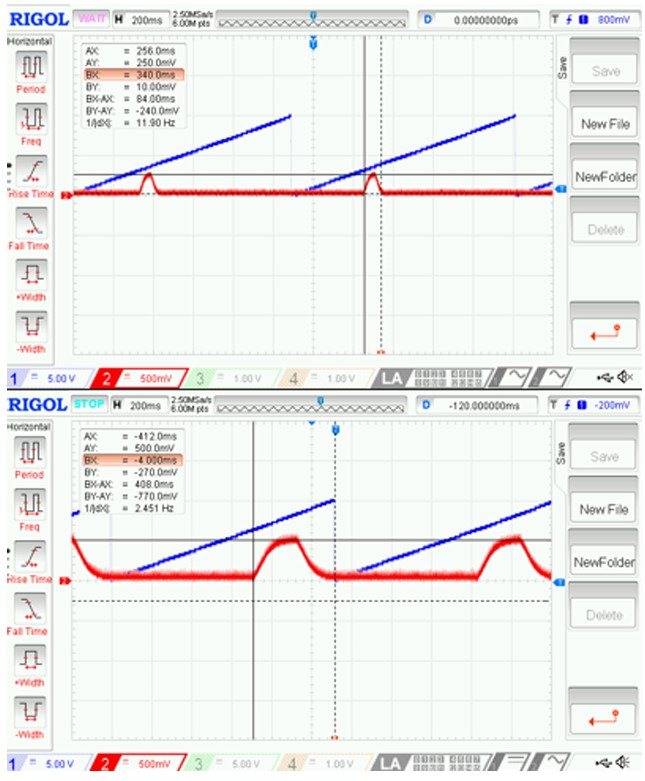
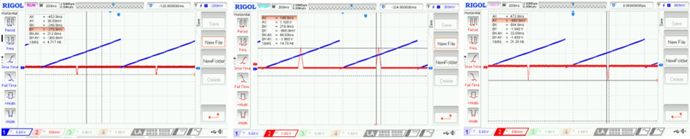
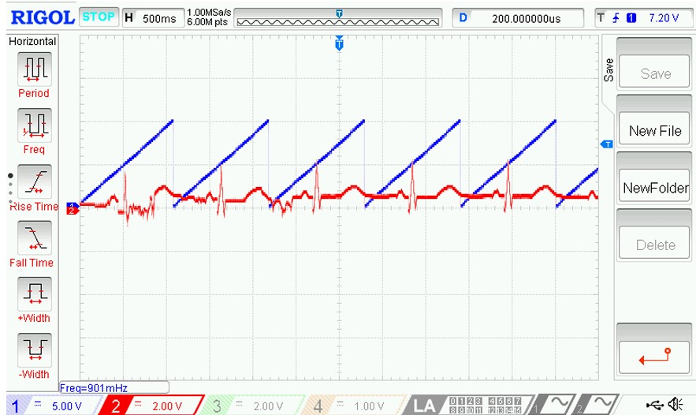
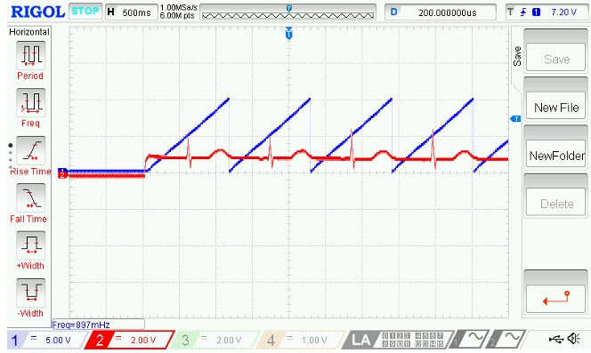
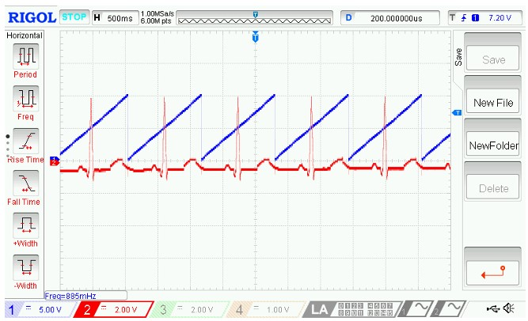
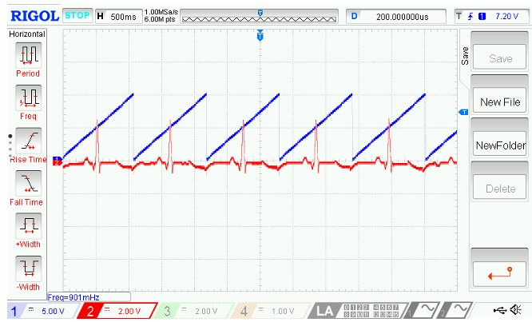
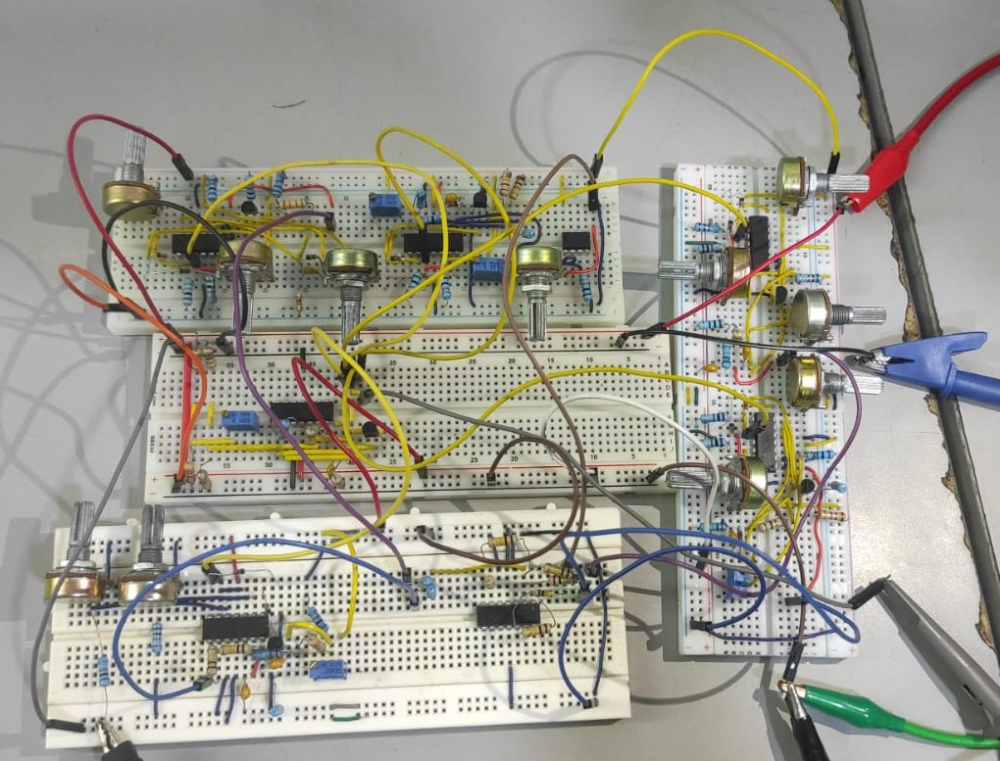
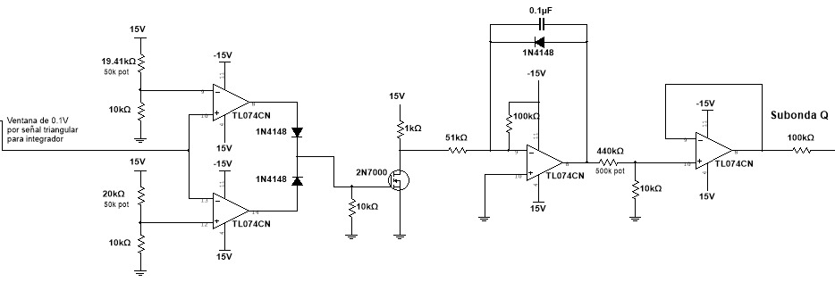
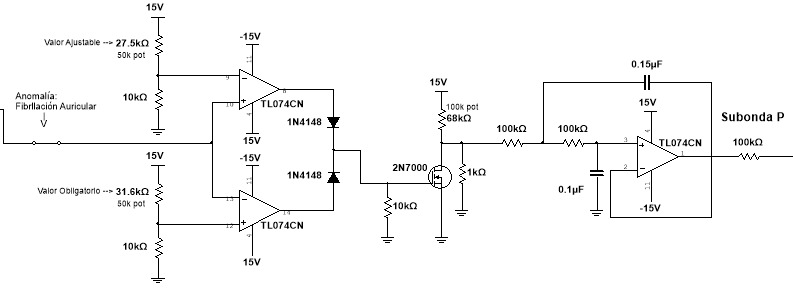
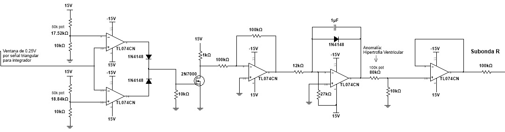
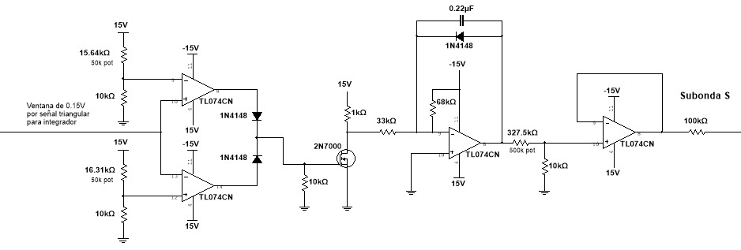
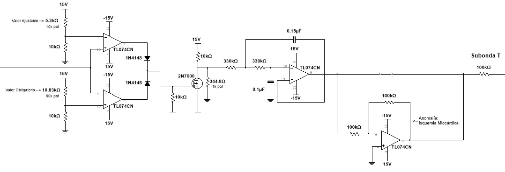